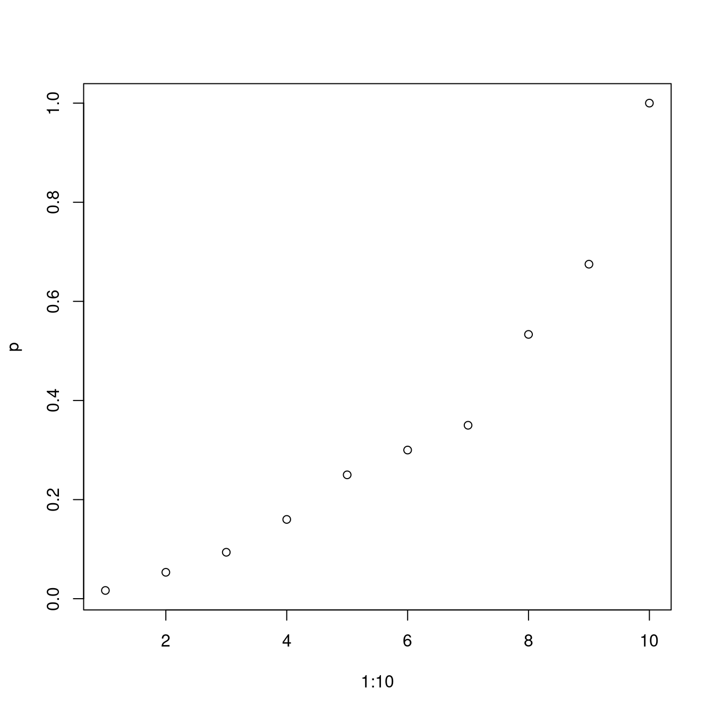
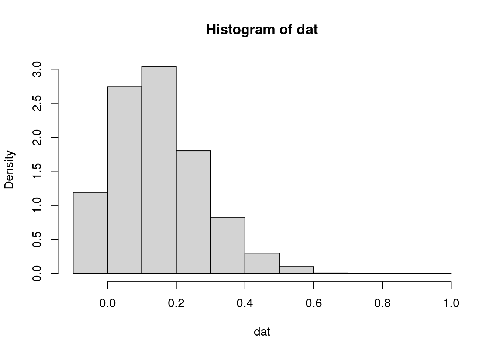
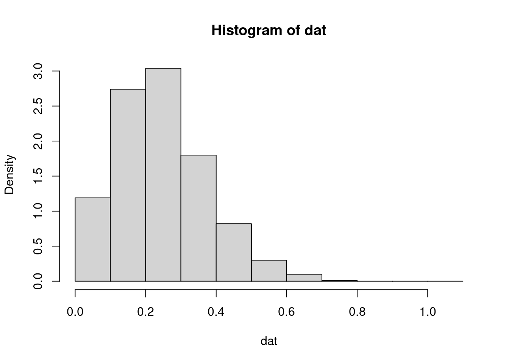
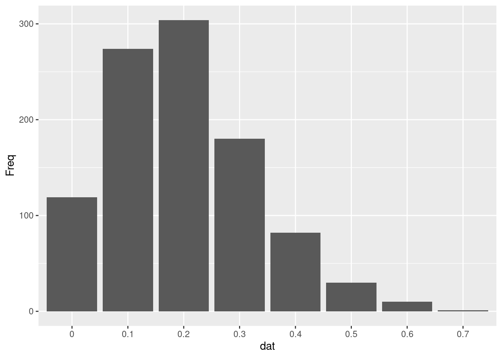
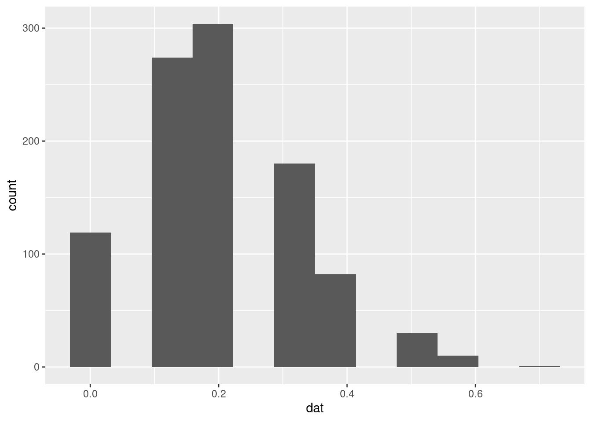

18.2 区间估计
18.2.1 正态分布
正态分布 \(\mathcal{N}(\mu,\sigma^2)\)，\(\sigma^2\) 未知，关于参数 \(\mu\) 的置信水平为 \(1 - \alpha\) 的区间估计
- 构造统计量 \(t = \frac{\bar{x} - \mu}{s/\sqrt{n}} \sim t(n-1)\)
- 参数 \(\mu\) 的 \(1-\alpha\) 置信区间为 \[\bar{x} \pm t_{1-\alpha/2}(n-1)s/\sqrt{n}\]
其中，\(s^2 = \frac{1}{n-1}\sum_{i=1}^{n}(x_i - \bar{x})^2\) 是 \(\sigma^2\) 的无偏估计。若取 \(\alpha = 0.05\)，则置信水平 \(1 - \alpha = 0.95\)。
set.seed(2020) # 为了可重复，设置随机数种子
mu_ci <- function(alpha = 0.05, n = 100, mu = 4) {
x <- rnorm(n = n, mean = mu, sd = 1)
x_bar <- mean(x)
d <- qt(p = 1 - alpha / 2, df = n - 1, lower.tail = TRUE) * var(x) / sqrt(n)
c(mu = mu, lower = x_bar - d, upper = x_bar + d)
}
# 重抽样 100 次，获得 100 个置信区间
dat <- t(replicate(n = 100, mu_ci(alpha = 0.05, n = 100, mu = 4)))
dat <- transform(dat, idx = 1:100, cover = ifelse(mu >= lower & mu <= upper, TRUE, FALSE))真实的参数值 \(\mu = 4\)，重抽样 100 次，覆盖真值的次数为 97 次，覆盖概率为 0.97
# 覆盖概率
mean(dat$cover)## [1] 0.97library(ggplot2)
ggplot() +
geom_segment(data = dat, aes(
x = idx, xend = idx,
y = lower, yend = upper, color = cover
)) +
geom_hline(yintercept = 4) +
theme_minimal() +
labs(x = "", y = "")图 18.1: \(\mu\) 的置信水平为 0.95 的置信区间
方差 \(\sigma^2\) 已知的情况下，标准正态分布 \(N(\mu, \sigma^2), \mu = 0, \sigma^2 = 1\) 的参数 \(\mu\) 的区间估计和覆盖概率 https://yihui.org/animation/example/conf-int/
18.2.2 0-1 分布
设 0-1 分布 \(B(1, p)\) 的成功概率 \(p = 0.95\)，假定是抛硬币的场景，成功概率对应正面朝上的概率为 0.95。一次实验，重复抛 10 次，有两次正面朝上。现在要根据这次实验结果估计成功概率 \(p\) 的值，及其置信区间
# 卡方近似
prop.test(x = 2, n = 10, p = 0.95, conf.level = 0.95, correct = TRUE)## Warning in prop.test(x = 2, n = 10, p = 0.95, conf.level = 0.95, correct =
## TRUE): Chi-squared approximation may be incorrect##
## 1-sample proportions test with continuity correction
##
## data: 2 out of 10, null probability 0.95
## X-squared = 103.16, df = 1, p-value < 2.2e-16
## alternative hypothesis: true p is not equal to 0.95
## 95 percent confidence interval:
## 0.03542694 0.55781858
## sample estimates:
## p
## 0.2# 二项精确估计
binom.test(x = 2, n = 10, p = 0.95, conf.level = 0.95)##
## Exact binomial test
##
## data: 2 and 10
## number of successes = 2, number of trials = 10, p-value = 1.605e-09
## alternative hypothesis: true probability of success is not equal to 0.95
## 95 percent confidence interval:
## 0.02521073 0.55609546
## sample estimates:
## probability of success
## 0.2可知，在置信水平都是 0.95 的情况下，带连续矫正的单样本比例检验方法获得的区间估计是 (0.0354, 0.5578)， 区间长度 0.5224。精确二项检验方法获得的区间估计是 (0.0252, 0.5560)，区间长度 0.5308。
从二项分布 \(B(30, 0.2)\) 中随机抽取一个样本，为可重复记，设置随机数种子为 2020
set.seed(2020)
rbinom(1, size = 30, prob = 0.2) ## [1] 7得到样本观测值为 7，
7 - qnorm(1 - 0.95 / 2) * sqrt(0.2 * 0.8 / 30) # 6.995## [1] 6.9954217 + qnorm(1 - 0.95 / 2) * sqrt(0.2 * 0.8 / 30) # 7.0045## [1] 7.004579样本观测值 7 对应的参数 \(p\) 的区间估计，如下
prop.test(x = 7, n = 30, p = 0.2, conf.level = 0.95, correct = TRUE) ##
## 1-sample proportions test with continuity correction
##
## data: 7 out of 30, null probability 0.2
## X-squared = 0.052083, df = 1, p-value = 0.8195
## alternative hypothesis: true p is not equal to 0.2
## 95 percent confidence interval:
## 0.1063502 0.4270023
## sample estimates:
## p
## 0.2333333随机变量 \(X\) 服从二项分布 \(B(30, 0.2)\)，则概率值 \(P(x \leq 7) = 0.7607\)
pbinom(7, size = 30, prob = 0.2, lower.tail = TRUE)## [1] 0.7607906已知概率值为 0.95， 即 \(P(x \leq m) = 0.95\) 且 \(X \sim B(30, 0.2)\)，现在计算 m 的值，即求下分位点，为 10
qbinom(p = 0.95, size = 30, prob = 0.2, lower.tail = TRUE)## [1] 10二项分布的特点，主要用于计算期望，概率 \(P\big\{ C_1 +1\leq x \leq C_2 -1 \big\}\)
\[ \sum_{x = C_1 + 1}^{C_2 -1} x \binom{n}{x} p^{x}(1-p)^{n-x} = np \sum_{x = C_1 + 1}^{C_2 -1} \binom{n -1}{x -1} p^{x -1}(1-p)^{(n -1)-(x-1)} \]
n = 30
c2 = 20
c1 = 10
p = 0.2
n * p * (pbinom(q = c2 - 2, size = n - 1, prob = p) - pbinom(q = c1 - 1, size = n - 1, prob = p))## [1] 0.295580318.2.3 置信区间和信仰区间
计算置信区间的覆盖概率 binom
二项分布的参数估计，包括点估计和区间估计 (Clopper and Pearson 1934)
给定样本量 n = 10 0-1 分布 成功概率 p 分别取 0.1,0.2,…,1 置信度为 95% 观测到 x 取 1,2,3,..,10 时 估计 p 的上下限
set.seed(2019)
x <- rbinom(n = 1, size = 10, prob = 0.1) # 结果解读抛掷硬币 10 次，观测到2次正面朝上，估计正面朝上的概率
观测到正面朝上 2 次 此时请以 95% 的信心给出 p 的区间 (p_low, p_up)
绘制曲线 p 关于 x 的曲线
set.seed(2019)
p <- seq(from = 0, to = 1, length.out = 11)
# 成功概率 总体参数 p 值
sapply(rep(p, each = 10), rbinom, n = 1, size = 10)## [1] 0 0 0 0 0 0 0 0 0 0 2 1 0 1 0 0 2 0 0 1 3 2 1 1 3
## [26] 2 0 3 1 2 3 3 5 2 1 0 3 5 3 3 5 1 5 3 1 2 3 4 1 5
## [51] 5 4 7 6 6 5 7 7 4 4 7 8 9 7 6 7 2 4 8 8 8 8 6 8 6
## [76] 4 8 9 6 7 9 9 9 9 8 4 9 8 9 7 10 8 7 10 9 10 9 9 8 10
## [101] 10 10 10 10 10 10 10 10 10 10计算每一次抽样获得的上下限
Clopper-Pearson 方法，即求和搜索，在保持累积概率
\[B(x,n;n,p) = \sum_{r = x}^{n} \binom{n}{r}p^r(1-p)^{n-r} = \alpha/2\]
其中 n 表示试验次数，这里是 10， p 是未知待求，已知 \(\alpha = 0.05\)，而 \(1-\alpha\) 表示置信水平，意思是说对于我给出的区间估计，长期来看，我有 95% 的信心认为，真实值 \(p\) 会落在此区间内。
对上尾部从 x 到 n 求和，计算 p，对每一个 x 都能计算出一个 p，根据二项分布的对称性，区间 \([0, x]\) 和 \([x,n]\) 的累积概率是相同的，各占 \(\alpha/2\)
# 精确计算二项分布检验的 p
# 调用符号计算
# x = 7
fun <- function(p, r = 8, n = 10) {
choose(n, n-2)*p^r*(1-p)^(n-r) + choose(n, n-1)*p^(n-1)*(1-p) + choose(n, n)*p^n - 0.025
}
uniroot(fun, lower = 0, upper = 1)## $root
## [1] 0.4439038
##
## $f.root
## [1] -2.707352e-07
##
## $iter
## [1] 9
##
## $init.it
## [1] NA
##
## $estim.prec
## [1] 6.103516e-05# x = 8
fun <- function(p) {
45*p^8*(1-p)^2 + 10*p^9*(1-p) + p^10 - 0.025
}
uniroot(fun, lower = 0, upper = 1)## $root
## [1] 0.4439038
##
## $f.root
## [1] -2.707352e-07
##
## $iter
## [1] 9
##
## $init.it
## [1] NA
##
## $estim.prec
## [1] 6.103516e-05# x = 9
fun <- function(x) {
9 * x^10 - 10 * x^9 + 0.025
}
# 0.555 计算下限
uniroot(fun, lower = 0, upper = 1)## $root
## [1] 0.5549828
##
## $f.root
## [1] 3.773379e-07
##
## $iter
## [1] 10
##
## $init.it
## [1] NA
##
## $estim.prec
## [1] 6.462529e-05# x = 10
fun <- function(x) {
x^10 - 0.025
}
# 0.691
uniroot(fun, lower = 0, upper = 1)## $root
## [1] 0.6914996
##
## $f.root
## [1] -1.194136e-06
##
## $iter
## [1] 9
##
## $init.it
## [1] NA
##
## $estim.prec
## [1] 6.103516e-05累积二项概率
找到最小的 p 使得其等于 9
# 已知概率求上分位点
# 等于
qbinom(0.025, size = 10, prob = 0.565, lower.tail = F)## [1] 9找到使得函数为 0 的 p 中最小的那个，找到所有的根，然后取最小的那个
fun <- function(p, r = 9) qbinom(0.025, size = 10, prob = p, lower.tail = F) - r
# 计算每个 x 对应的 p
(p <- sapply(1:10, function(x) uniroot(fun, lower = 0, upper = 1, r = x)$root))## [1] 0.01666667 0.05333333 0.09375000 0.16000000 0.25000000 0.30000000
## [7] 0.35000000 0.53333333 0.67500000 1.00000000plot(x = 1:10, y = p)
# 二项检验 菱形置信带
set.seed(2019)
dat <- replicate(10^3, expr = {
x = sample(0:1, size = 10, replace = TRUE, prob = c(0.8, 0.2))
sum(x)/10
})
# 成功概率 p = 0.2 每个样本量 10
dat <- rbinom(n = 10^3, size = 10, prob = 0.2)/10
table(dat)## dat
## 0 0.1 0.2 0.3 0.4 0.5 0.6 0.7
## 119 274 304 180 82 30 10 1# 分布图 y 轴是密度
# right = TRUE 区间形式 (a,b] 左开右闭
hist(dat, probability = T, breaks = seq(from = -0.1, to = 1, by = 0.1))
# 0.2^10 左闭右开区间
hist(dat, probability = T, breaks = seq(from = 0, to = 1.1, by = 0.1),
right = FALSE, xlim = c(0, 1.1))
# 分布
library(ggplot2)
library(magrittr)
# 这个图里面会不会隐含什么信息，分布是怎样的？
# 二项展开有关系吗
dat1 <- as.data.frame(table(dat))
ggplot(data = dat1, aes(x = dat, y = Freq)) +
geom_col()
ggplot(as.data.frame(dat), aes(x = dat)) +
geom_histogram(bins = 12)